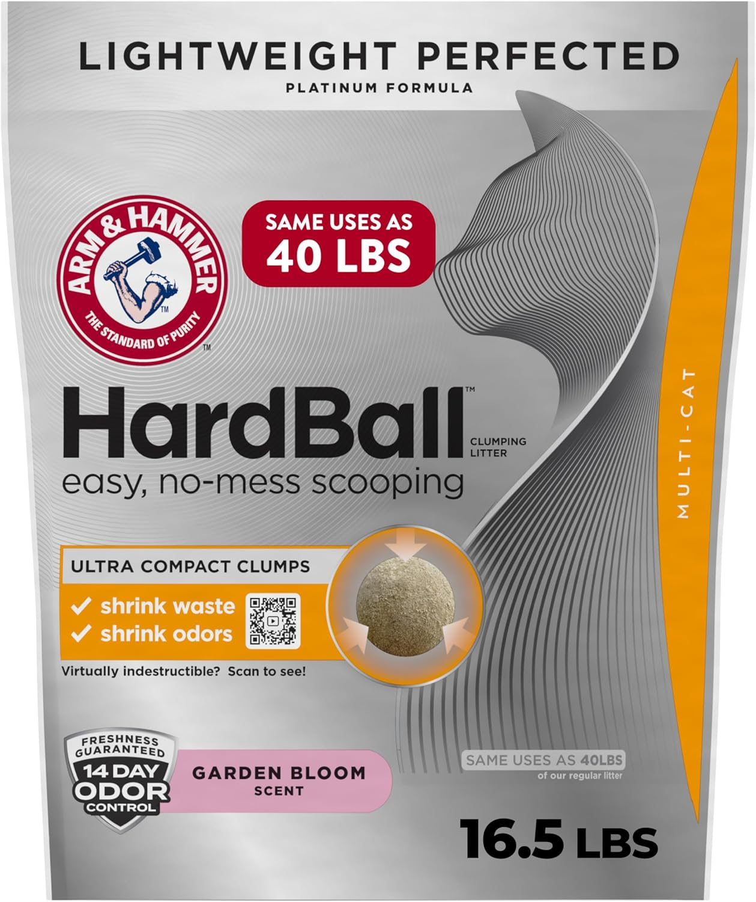
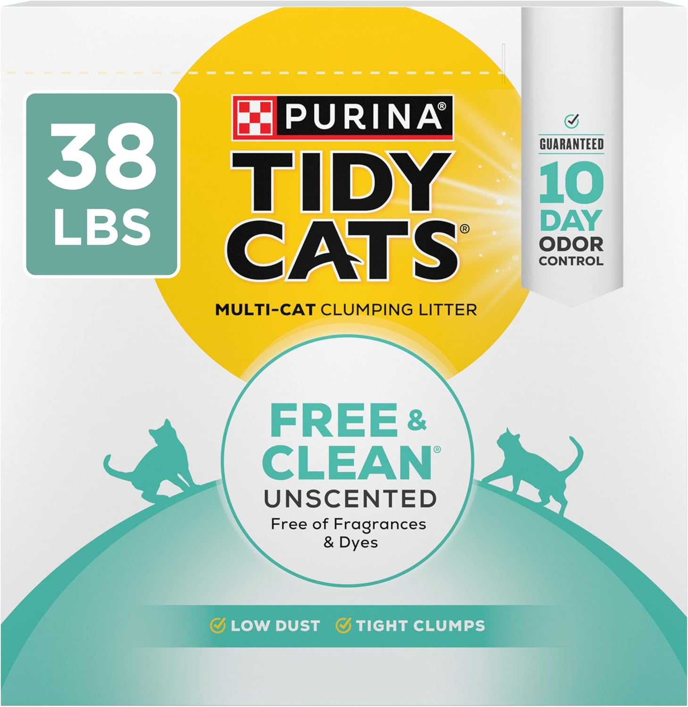
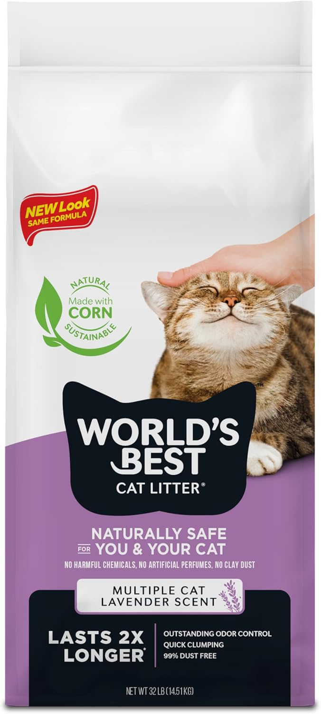

Best Cat Litter for Odor Control 2025
Quick Picks for Busy Cat Parents
What's in This Guide
Finding cat litter that actually controls odors can feel impossible. You've probably tried multiple brands only to have your home still smell like a litter box within hours.
After analyzing hundreds of customer reviews, manufacturer specifications, and veterinary recommendations, we've identified the key factors that separate truly effective odor-controlling litters from marketing gimmicks.
How Cat Litter Actually Controls Odors
Not all odor control mechanisms are created equal. Understanding the science helps you choose the right type for your situation.
Absorption vs Adsorption
Absorption means the litter soaks up liquid waste like a sponge. Adsorption means odor molecules stick to the litter surface. The best litters do both effectively.
Key Odor-Fighting Ingredients
- Baking Soda: Neutralizes acidic odor compounds
- Activated Carbon: Traps odor molecules through adsorption
- Zeolites: Natural minerals that absorb ammonia
- Antimicrobial agents: Prevent bacteria growth that causes odors
Top 5 Cat Litters for Odor Control
1. Arm & Hammer Cloud Control Platinum - Best Overall
This clumping clay litter combines multiple odor-fighting technologies: baking soda for neutralization, plant-derived particles for extra absorption, and a 14-day odor control guarantee.
Pros
- Excellent clumping action
- Long-lasting odor control
- Low dust formula
- Works well for multiple cats
Cons
- Higher price point
- Heavier than alternatives
- Light scent may bother sensitive cats
Best For: Cat owners who prioritize maximum odor control and don't mind paying extra for premium performance.
Check Current Price on Amazon2. Tidy Cats Free & Clean Unscented - Best Budget Option
A straightforward clumping clay litter without added fragrances. The tight clumps lock in odors effectively, and the unscented formula works well for cats with sensitivities.
Pros
- Excellent value for money
- Strong clumping action
- No artificial fragrances
- Widely available
Cons
- May need more frequent changing
- Can be dusty when pouring
- Limited odor control for heavy use
Best For: Budget-conscious cat owners with one or two cats who change litter regularly.
Check Current Price on Amazon3. World's Best Cat Litter Multiple Cat Clumping - Best Natural
Made from whole-kernel corn, this natural litter offers surprising odor control power. The corn naturally traps odors while forming tight clumps that don't break apart.
Pros
- 100% natural ingredients
- Flushable (where permitted)
- Lightweight yet effective
- Safe if ingested
Cons
- Higher cost than clay litters
- Some cats dislike corn scent
- Can attract insects if stored improperly
Best For: Environmentally conscious cat owners who prefer natural products and don't mind paying extra.
Check Current Price on AmazonWhat to Look for When Choosing Cat Litter for Odor Control
Clumping vs Non-Clumping
Clumping litters form solid masses around waste, making removal easier and preventing odors from spreading throughout the box. Non-clumping litters absorb moisture but require complete box changes more frequently.
Scented vs Unscented
Unscented litters are generally better for odor control. Scented varieties often mask odors temporarily rather than eliminating them, and many cats avoid heavily perfumed litters.
Dust Levels
Low-dust formulas are healthier for both cats and humans while reducing tracking. Look for litters labeled "99% dust-free" or similar.
| Litter Type | Odor Control | Price Range | Best For |
|---|---|---|---|
| Clay Clumping | Excellent | $15-25 | Most cat owners |
| Crystal/Silica | Very Good | $20-30 | Low maintenance |
| Natural/Corn | Good | $18-28 | Eco-conscious owners |
| Pine/Wood | Moderate | $12-20 | Budget & natural |
Special Situations & Solutions
Multiple Cat Households
Households with 3+ cats need extra-strength formulas. Look for litters specifically labeled for multiple cats, which typically contain higher concentrations of odor-fighting ingredients.
Senior Cats with Health Issues
Older cats may have stronger-smelling waste due to kidney issues or medications. Consider switching to a high-performance clay litter with activated carbon.
Litter Box Location Challenges
If your litter box must be in a small bathroom or bedroom, prioritize unscented, high-performance clumping litters and increase scooping frequency.
Frequently Asked Questions
With good clumping litter and daily scooping, complete changes every 2-3 weeks are sufficient. Non-clumping litters need full changes weekly.
Generally not recommended. Different litters may clump differently or create dust. Stick with one high-quality brand for consistent performance.
Cats have sensitive noses and may find artificial fragrances overwhelming. Many cats prefer unscented litters that let them detect their own scent markers.
Fill the box 2-3 inches deep. Too little litter won't clump properly; too much wastes product and makes scooping difficult.
Crystal litters absorb more moisture before needing replacement, but they don't clump, making daily waste removal less thorough than clumping varieties.
Bottom Line
The best cat litter for odor control depends on your specific situation, but clumping clay litters with baking soda consistently outperform alternatives for most households. Start with our top overall pick, Arm & Hammer Cloud Control, and adjust based on your cat's preferences and your maintenance routine.
Remember: even the best litter can't overcome poor maintenance. Daily scooping and regular complete changes remain essential for odor control regardless of which product you choose.
Affiliate Disclosure: ThePetProductLab participates in affiliate programs including Amazon Associates. We may earn commissions on qualifying purchases made through our links at no extra cost to you.